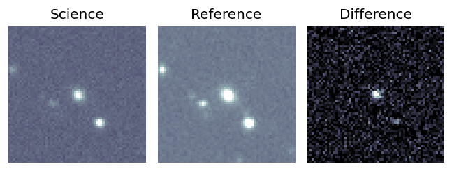
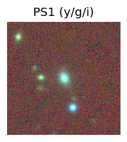
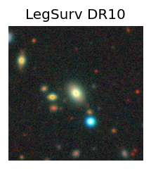
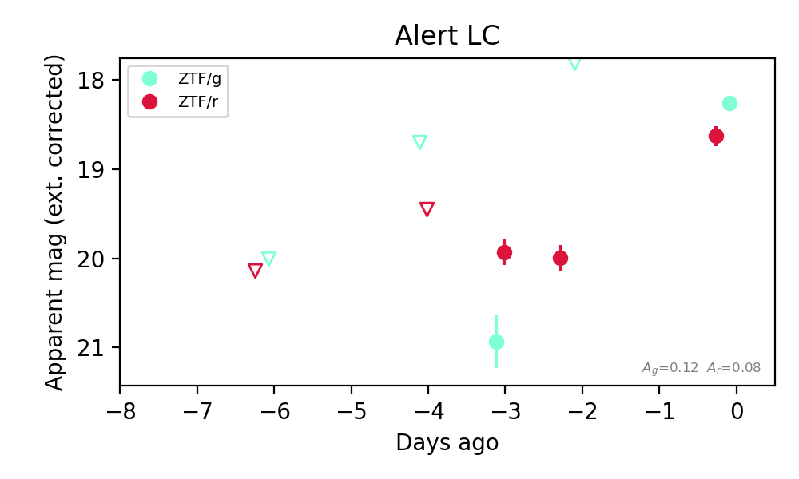

Candidate List 20260326Last night — ZTF: 1 passed basic cuts (1 young) · LSST: 0 passed basic cuts (0 young)Previous Day Next Day
Section 1: New Sources (age<1d) Section 2: Old (1-5d) sources observed last nightplaceholder
Section 2: Older Sources Observed Last Night (1)
0. [ZTF] ZTF26aapviim (FBOT?) [Back to Top] [Share] [Trigger Swift] [Fritz Alert] [Fritz Source] [Lasair]RA, Dec: 131.05153, 82.01971 8h44m12.37s, 82d 1m10.97sGalactic (l, b): 131.10984, 30.65989 ext(g-r) = 0.039


TESS: Sectors [ 19 20 26 40 47 53 59 60 73 74 119]
SDSS (<15 kpc):Found SDSS phot-z: z=0.11; peak abs mag = -20.31
PS1: 0 sources in 3 arcsec
LegacySurvey: 1 sources in 3 arcsec Closest: d = 0.11 arcsec, 213.1 deg (east of north) photoz=0.08 (68% bounds 0.07, 0.09), type=SER peak abs mag (ext. corrected) = -19.64 (68% bounds -19.4, -19.92)

Extinction-corrected gr color:
From alerts: -0.37 +/- 0.14 mag
Rise Rate:
g: 0.88 mag/day
r: 0.53 mag/day
Fade Rate: